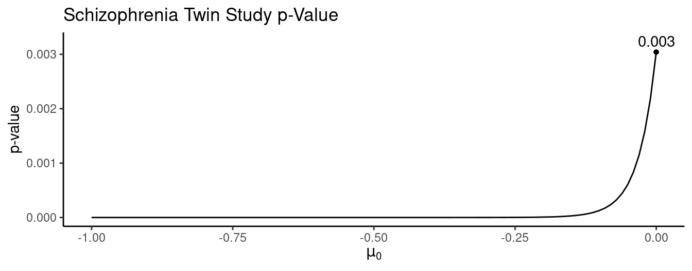
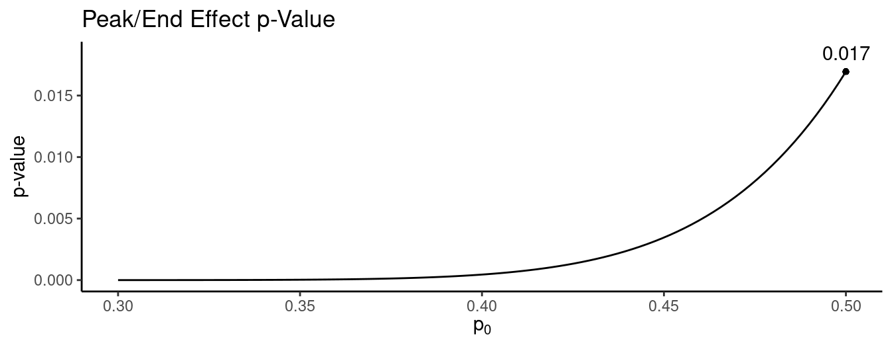
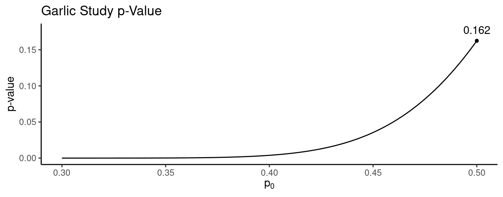
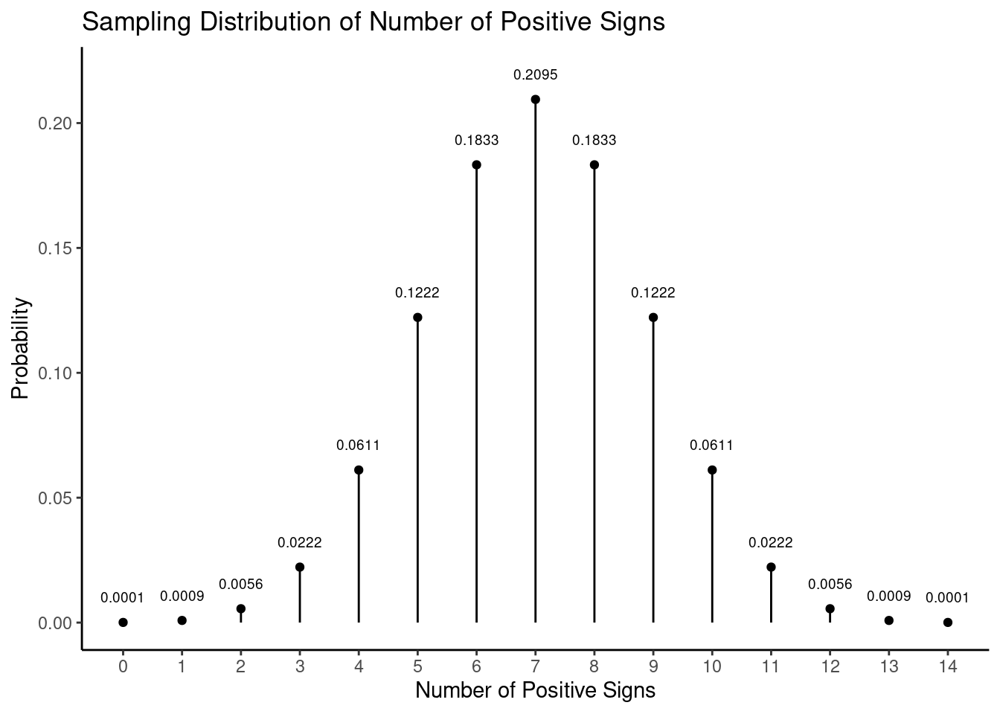

You can also download a PDF copy of this lecture.
Simple hypotheses specify that a parameter is equal some value (e.g., \(p\) \(=\) 0.5 or \(\mu\) \(=\) 0).
Composite hypotheses specify that a parameter is in a range of values (e.g., \(p\) \(>\) 0.5 or \(\mu\) \(>\) 0).
In many of our examples null hypothesis are simple and alternative hypothesis are composite. But sometimes the null hypothesis is also composite such as \[ H_0: p \le 0.5,\ H_a: p > 0.5 \] or \[ H_0: \mu \le 0,\ H_a: \mu > 0. \] Decision rule for composite null hypotheses:
Reject \(H_0\!: \mu \le \mu_0\) if and only if you reject \(H_0\!: \mu = \mu_0\).
Reject \(H_0\!: p \le p_0\) if and only if you reject \(H_0\!: p = p_0\).
| Pair | Unaffected | Affected | Difference |
|---|---|---|---|
| 1 | 1.94 | 1.27 | 0.67 |
| 2 | 1.44 | 1.63 | -0.19 |
| 3 | 1.56 | 1.47 | 0.09 |
| 4 | 1.58 | 1.39 | 0.19 |
| 5 | 2.06 | 1.93 | 0.13 |
| \(\vdots\) | \(\vdots\) | \(\vdots\) | \(\vdots\) |
| 15 | 2.08 | 1.97 | 0.11 |
The mean and standard deviation for the sample of 15 differences are 0.2 and 0.24 cubic centimeters, respectively.
How can we conduct a statistical test with the composite hypotheses \(H_0\!: \mu \le 0\) and \(H_a\!: \mu > 0\) using a significance level of \(\alpha\) = 0.05?

Example: A study of the “peak/end effect” used two treatment conditions summarized below.1| Time | Longer | Shorter |
|---|---|---|
| 60 sec | 14 C | 14 C |
| 30 sec | 15 C |
Each of 32 subjects went through both treatment conditions (in random order). When asked which of the two treatments they would like to repeat, 22 selected the longer treatment. Let \(p\) be the probability of selecting to repeat the longer treatment.
How can we conduct a statistical test with the composite hypotheses \(H_0\!: p \le 0.5\) versus \(H_a\!: p > 0.5\) using a significance level of \(\alpha\) = 0.05?

Example: Recall the garlic study where 37 out of 66 subjects reported fewer tick bites when taking garlic. Let \(p\) be the probability that someone responds that they were bit less often when taking garlic.
How can we conduct a statistical test with the composite hypotheses \(H_0\!: p \le 0.5\) versus \(H_a\!: p > 0.5\) using a significance level of \(\alpha\) = 0.05?

Consider a test of the hypotheses \(H_0\!: \mu = \mu_0\) versus \(H_a\!: \mu \neq \mu_0\). How can we use the confidence interval \[ \bar{x} \pm t\frac{s}{\sqrt{n}} \] to conduct this test?
Decision rule: Reject \(H_0\!:\mu = \mu_0\) if and only if \[\bar{x} - t\frac{s}{\sqrt{n}} < \mu_0 < \bar{x} + t\frac{s}{\sqrt{n}}\] is not true.
Example: Consider again the schizophrenia twin study.| Pair | Unaffected | Affected | Difference |
|---|---|---|---|
| 1 | 1.94 | 1.27 | 0.67 |
| 2 | 1.44 | 1.63 | -0.19 |
| 3 | 1.56 | 1.47 | 0.09 |
| 4 | 1.58 | 1.39 | 0.19 |
| 5 | 2.06 | 1.93 | 0.13 |
| \(\vdots\) | \(\vdots\) | \(\vdots\) | \(\vdots\) |
| 15 | 2.08 | 1.97 | 0.11 |
The mean and standard deviation for the sample of 15 differences are 0.2 and 0.24 cubic centimeters, respectively. The confidence interval for \(\mu\), based on a confidence level of 95%, is \[ 0.2 \pm 2.145 \frac{0.24}{\sqrt{15}} \Rightarrow 0.2 \pm 0.13 \Rightarrow (0.07, 0.33). \] What if we had the same results except that the the standard deviation was three times larger? Then the confidence interval would be \[ 0.2 \pm 2.145 \frac{0.72}{\sqrt{15}} \Rightarrow 0.2 \pm 0.4 \Rightarrow (-0.2, 0.6). \]
Requirements for the test and confidence interval to agree.
The sign test is a test that can be applied to matched-pairs designs.2 It is what is sometimes called a “non-parametric” test. An advantage of such tests is that they can sometimes handle situations where the measurements are relatively “crude” in nature.
Example: Consider the following data from a study comparing the ratings of husbands and wives on the perceived relative influence of each member of the couple on a major financial decision. The ratings are made on a 1-7 scale ranging from wife-dominated (1) to husband-dominated (7).| Couple | Husband | Wife | Difference | Sign |
|---|---|---|---|---|
| 1 | 5 | 3 | 2 | \(+\) |
| 2 | 4 | 3 | 1 | \(+\) |
| 3 | 6 | 4 | 2 | \(+\) |
| 4 | 6 | 5 | 1 | \(+\) |
| 5 | 3 | 3 | 0 | |
| 6 | 2 | 3 | -1 | \(-\) |
| 7 | 5 | 2 | 3 | \(+\) |
| 8 | 3 | 3 | 0 | |
| 9 | 1 | 2 | -1 | \(-\) |
| 10 | 4 | 3 | 1 | \(+\) |
| 11 | 5 | 2 | 3 | \(+\) |
| 12 | 4 | 2 | 2 | \(+\) |
| 13 | 4 | 5 | -1 | \(-\) |
| 14 | 7 | 2 | 5 | \(+\) |
| 15 | 5 | 5 | 0 | |
| 16 | 5 | 3 | 2 | \(+\) |
| 17 | 5 | 1 | 4 | \(+\) |
Note that there are 14 signs, of which 11 are positive signs. Let \(p\) be the probability of a positive sign and consider the hypotheses \(H_0\!: p = 0.5\) versus \(H_a\!: p > 0.5\), or \(H_0\!: p = 0.5\) versus \(H_a\!: p \neq 0.5\).
Assuming \(p\) = 0.5, the number of positive signs out of a total number of signs has a binomial distribution where \[ P(s) = \frac{n!}{s!(n-s)!}0.5^s(1-0.5)^{n-s}, \] where \(n\) is the number of signs and \(s\) is the number of positive signs.  For our use we can tabulate this sampling distribution.| \(+\) Signs | 5 | 6 | 7 | 8 | 9 | 10 | 11 | 12 | 13 | 14 | 15 |
|---|---|---|---|---|---|---|---|---|---|---|---|
| 0 | 0.0312 | 0.0156 | 0.0078 | 0.0039 | 0.0020 | 0.0010 | 0.0005 | 0.0002 | 0.0001 | 0.0001 | 0.0000 |
| 1 | 0.1562 | 0.0937 | 0.0547 | 0.0313 | 0.0176 | 0.0098 | 0.0054 | 0.0029 | 0.0016 | 0.0009 | 0.0005 |
| 2 | 0.3125 | 0.2344 | 0.1641 | 0.1094 | 0.0703 | 0.0439 | 0.0269 | 0.0161 | 0.0095 | 0.0056 | 0.0032 |
| 3 | 0.3125 | 0.3125 | 0.2734 | 0.2188 | 0.1641 | 0.1172 | 0.0806 | 0.0537 | 0.0349 | 0.0222 | 0.0139 |
| 4 | 0.1562 | 0.2344 | 0.2734 | 0.2734 | 0.2461 | 0.2051 | 0.1611 | 0.1208 | 0.0873 | 0.0611 | 0.0417 |
| 5 | 0.0312 | 0.0938 | 0.1641 | 0.2188 | 0.2461 | 0.2461 | 0.2256 | 0.1934 | 0.1571 | 0.1222 | 0.0916 |
| 6 | 0.0156 | 0.0547 | 0.1094 | 0.1641 | 0.2051 | 0.2256 | 0.2256 | 0.2095 | 0.1833 | 0.1527 | |
| 7 | 0.0078 | 0.0313 | 0.0703 | 0.1172 | 0.1611 | 0.1934 | 0.2095 | 0.2095 | 0.1964 | ||
| 8 | 0.0039 | 0.0176 | 0.0439 | 0.0806 | 0.1208 | 0.1571 | 0.1833 | 0.1964 | |||
| 9 | 0.0020 | 0.0098 | 0.0269 | 0.0537 | 0.0873 | 0.1222 | 0.1527 | ||||
| 10 | 0.0010 | 0.0054 | 0.0161 | 0.0349 | 0.0611 | 0.0916 | |||||
| 11 | 0.0005 | 0.0029 | 0.0095 | 0.0222 | 0.0417 | ||||||
| 12 | 0.0002 | 0.0016 | 0.0056 | 0.0139 | |||||||
| 13 | 0.0001 | 0.0009 | 0.0032 | ||||||||
| 14 | 0.0001 | 0.0005 | |||||||||
| 15 | 0.0000 |
So what then are the \(p\)-values for our tests?
Example: Consider the following data using a matched-pairs design to investigate the effectiveness of temporary skin grafts from cadavers for severely burned patients.3 Each patient was given one graft that was a close match and another that was a poor match based on human leukocyte antigen (HL-A) compatibility. The numbers shown below are days until the inevitable rejection of the graft by the immune system.| Patient | Close | Poor | Difference | Sign |
|---|---|---|---|---|
| 1 | 37 | 29 | 8 | \(+\) |
| 2 | 19 | 13 | 6 | \(+\) |
| 3 | 57+ | 15 | at least 42 | \(+\) |
| 4 | 93 | 26 | 67 | \(+\) |
| 5 | 16 | 11 | 5 | \(+\) |
| 6 | 23 | 18 | 5 | \(+\) |
| 7 | 20 | 26 | -6 | \(-\) |
| 8 | 63 | 43 | 20 | \(+\) |
| 9 | 29 | 18 | 11 | \(+\) |
| 10 | 60+ | 42 | at least 18 | \(+\) |
| 11 | 18 | 19 | -1 | \(-\) |
Note: For patients 3 and 10 only the minimum time until rejection is known for the close match skin graft due to the death of one patient and loss of data on the other (these are sometimes called censored observations). This would preclude use of the \(t\) test statistic, but the sign test can still be applied!
Kahneman, D., Fredrickson, B. L., Schreiber, C. A., & Redelmeier, D. A. (1993). When more pain is preferred to less. Psychological Science, 4(6), 401–405.↩︎
Qualls, W. J. (1982). A study of the joint decision making between husbands and wives in a housing purchase decision. Unpublished dissertation, Indiana University.↩︎
Batchelor, J. R. & Hackett, M. (1970). HL-A matching in treatment of burned patients with skin allografts. Lancet, 2, 581–583.↩︎